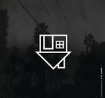

En esta pagina vas a encontrar información sobre esta banda tan popular y soobre los logros que han optenido a lo lardo de su carrera.
The Neighbourhood (THE NBHD) es una banda de música alternativa rock estadounidense creada en agosto de 2011, el grupo está formado por el
vocalista Jesse Rutherford, los guitarristas Jeremy Freedman, Zach Abels y el bajista Mikey Margott.
La banda publicó su primer álbum de estudio el 23 de abril de 2013 a través de Columbia Records.
Desarrollador
Hola mi nombre es Lisbeth Presentación, y me encantaria compartir contigo información sobre mi banda favorita
(THE NBHD) y mostrarte sus maravillosas canciones y enseñarte mas sobre sus integrantes y que sucedio con esta banda!
Introducción
La historia de The Neighbourhood comienza en 2011 con un grupo de amigos californianos que deciden lanzarse a la escena musical.
. Jesse, Jeremy, Zach, Michael y el entonces baterista Bryan Sammis, comenzaron su aventura escogiendo el deletreo británico
de “neighbourhood” para distinguirse de otros grupos, aconsejados por su manager. A comienzos de 2012, la banda lanza sus primeras canciones
Female Robbery y Sweater Weather, tema que se convertiría en todo un hit siendo #1 en la lista Billboard Alternative para 2013.
Los dos temas fueron populares en línea generando interés en la banda.
Ese mismo año, el grupo lanzó su primer EP I’m Sorry… (2012), trabajo de cinco canciones que incluía los ya lanzados Sweater Weather y
Female Robbery, junto con Wires y Baby Came Home.
Le siguió el single Thank You (2012), con los temas Let It Go y A Little Death y en 2013, llegó el álbum debut I Love You, bajo Columbia Records.
La agrupación se caracteriza en usar los colores blanco y negro, tanto en fotos como videos.Su canción llena de éxito Sweater Weather;
fue escrita antes de formar la banda y fue lanzada por Facebook la primera vez, en el año 2018 a través de su canal de You Tube, lanzan una
especie de documental en blanco y negro y a color; donde proyectan ciertos conciertos, Mikey Margott, uno de los integrantes, tiene una
cicatriz en su rostro, pero no fue por ninguna herida; sino es una marca de nacimiento, Brandon Fried, uno del grupo, pertenecía cuando
tenía 8 años a una banda de nombre Blubberboys; la cual hacía presentaciones en su colegio, En sus principios el grupo lo constituían
seis integrantes, pero le dijeron adiós a Brayan Sammis, el 16 de abril del año 2018.
A pesar de caracterizarse por utilizar el blanco y el negro casi siempre;en el álbum Hard to imagine The Neighbourhood ever changing, utilizaron el color.

Jesse Rutherford
Jesse participó en comerciales y concursos de talentos cuando era niño, llegando a personificar en
algunos de ellos a Elvis Presley y N'Sync.Además, tuvo un pequeño papel como el personaje de Q'Ell en el episodio
Marauders de la serie Star Trek: Enterprise.
En 2002, se suma a su participación en la película Siete días y una vida, donde interpretó a Tommy, hijo de Pete (Edward Burns).
Ese mismo año es parte además de la película Ted Bundy, mientras que en 2003 actuó como extra en la película Dickie Roberts: Ex niño prodigio.
A principios de 2011, Jesse lanzó «Truth hurts, truth heals», su primer mixtape solista,donde demuestra sus habilidades como rapero,
como lo hacía en simultáneo con The Good Boys, el dúo que integraba con Jez Dior.
En agosto de ese mismo año, forma junto a los guitarristas Jeremy Freedman y Zach Abels, baterista Bryan Sammis y el bajista Mikey Margott, The Neighbourhood.
Albunes más conocidos de The Neighbourhood
Primer album de The Neighbourhood, I Love You
I Love You, apareció en abril de 2013 con un total de once canciones e inmediatamente se convirtió en un éxito.
Los sencillos Afraid, Let It Go y Sweater Weather, incluidos en el álbum solidificaron la popularidad del grupo.
Antes del lanzamiento del álbum, el grupo se presentó en Coachella aumentando aún más el interés del público.
Ese mismo año, vio la luz el EP The Love Collection (2013), con temas como West Coast y No Grey.
Segundo album de The Neighbourhood, Wiped Out!
Wiped Out!, fue lanzado el 30 de octubre de 2015. Y tras su lanzamiento encabezó el listado de álbumes alternativos
de Billboard. En Wiped Out!, aparecieron los exitosos sencillos R.I.P. 2 My Youth, Daddy Issues y temas como Cry Baby,
Baby Came Home 2 / Valentines y Single. En 2017 llegó The Hard EP, que se posicionó en el Billboard 200, seguido de To Imagine y Hard to Imagine, ambas lanzadas en 2018.
¿Que sucedio en 2022 con la banda?
En noviembre de 2022, la banda The Neighbourhood se vio envuelta en una controversia después de que María Zardoya,
miembro del grupo The Marías, acusara a Brandon Fried, uno de los miembros actuales de la banda, de acoso.
Después de tomar una decisión, la banda anunció en sus redes sociales que Brandon Fried había sido expulsado del grupo.
Enlaces relacionados
Aqui te dejo unos link para que vayasa ver mas información sobre ellos!